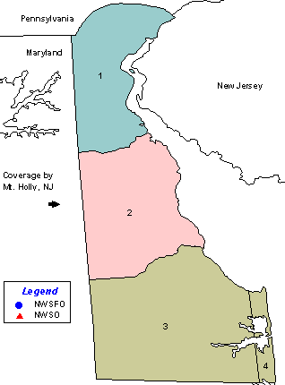

STATE Warning, Forecast & Observation Selection Page for DELAWARE Select desired area(s) by map number(s) or use drop down windows below 
Select by Area Name 4 Delaware Beaches, Extreme eastern Sussex 3 Inland Sussex, Sussex (except extreme east) 2 Kent 1 New Castle